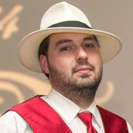

Backend & Infrastructure Engineer. I build things that run untouched for years.

1999. WebTV. A physical Perl book. No computer.
I learned to code by typing Perl into an HTML textarea on a free web host, using a television as my monitor. No local execution. No error messages, because debug was turned off. When something broke, I got a blank screen. That's it.
My debugging process: comment out every line, add an echo at the end, uncomment line by line until the echo disappeared. That was all I had. Google in 1999 just returned the Perl language spec, which is useless for a kid trying to figure out why his CGI script won't run.
Eventually my uncle gave me a real computer: 50MHz CPU, 36MB RAM, 300MB across 4 hard drives. Heaven. I tried to install Linux, got it working, but couldn't figure out how to dial into AOL with it. Back to Windows for a while.
Then broadband happened. Ethernet just works. No modem drivers. No proprietary dialers. I installed Linux again and never looked back. Daily driving it since 2006, through Debian, Ubuntu (until they lost their minds with Unity and snaps), Linux Mint on the desktop, and back to Debian on servers where it belongs.
The hard road taught me to actually understand things. When you learn without error messages, without Stack Overflow, without an IDE, you learn to think about code instead of just writing it.
2002. A hand-me-down Dell Optiplex, Pentium 3, running a Counter-Strike server.
It ran Windows XP and I started the server by double clicking the exe. I could not get it to run as a proper service the way I wanted, so I moved it to Debian. Never looked back. Apache showed up soon after, I learned some PHP, and I built a little app to restart the CS server and purge its logs. First real thing I ever built, because I was the guy who needed it.
For over a decade the pattern held: when I upgraded my desktop, the old one became the new server. Old desktops work fine. Storage is where it falls apart. Upgrading meant copying everything over by hand and keeping a map in my head of what's on which drive and which drive has space. That's not a storage strategy, it's a memory game you eventually lose.
Mid 2010s: ZFS and RAID 10. Data safe, faster, and dead simple to grow. Swap a pair out, one drive at a time, and boom, more space. No copying. No inventory in my head.
Today it's a 4 node Proxmox cluster: HPE ProLiant DL Gen8s, two running 24/7 and two I bring up on demand for whatever I'm working on. UniFi APs and router, Brocade 10 gig PoE switch. That gear has lived in hot, humid attics and dusty basements. Completely unbothered, just keeps running. That should be HPE's slogan.
It isn't a lab. It's production. Everything on this page runs here for real. So does Emby, the house, client demos, and corejourney.org, a public Minecraft server that strangers actually play on. Real people depend on it 24/7/365, so it has to be up.
That's the part a cloud console can't teach you. When you own the drives, the switch, the hypervisor and the app, and the users complain to your face, you find out real quick what breaks and what actually matters.
Theta42 is my consulting company. I own it. Software work dried up when the AI stuff hit, so a lot of my days now are education and tutoring, plus whatever else comes through the door. I'll wire cat6 if the money's right. Work is work. We chronicle a decade of open-source tools, infrastructure releases, and homelab builds at community.theta42.com.
Nights are for whatever has my attention, which lately means building software with my new pals Claude, Gemini and Ollama.
Local gets 17GB of VRAM, 12 from an RTX 2060 and 5 from a P2000, and I keep it pinned. I like local for the cost and the privacy. But reality is reality, and this stuff changes every month. The question I keep asking is: are you running on my computer, or on AWS? Right now it's still usually AWS. I don't have to like it.
Getting real work out of scavenged VRAM is half practical, half sport. The limit teaches you how the thing actually works, and once you know how it works you know which limit is the one really hurting you. Same loop as 1999.
The house runs on the cluster too. Home Assistant, local voice wired into the local models, and nothing that phones home. I'm dogmatic about that one. No vendor gets to brick my light switches or start charging me rent on them. It's another production service with users who complain to my face.
Rest of the time I'm hunting a deal on gear I don't need yet.
Identity, access, and secrets for home labs and small businesses, in one ./setup.sh. Bundles an OIDC/LDAP identity provider, an OIDC-aware reverse proxy, a directory-driven SSH jump host, and Linux host enrollment into one Docker Compose stack, all reading from a shared OpenBao secrets store. Every host and app auto-registers into a real inventory graph with its own access groups. Enterprise SSO without the enterprise. (Formerly theta-env.)
Reverse proxy and HTTPS termination that puts any app behind single sign-on. OpenResty under the hood, wildcard Let's Encrypt certs via DNS challenge (Cloudflare, DigitalOcean, PorkBun, DuckDNS), dynamic hostname routing with no reload. Unlike Traefik or Caddy, it's an OIDC and LDAP client, so access decisions come from a real user directory instead of a static allowlist. Per-host rate limiting, response caching, HSTS, and IP allow/deny come standard, plus round-robin load balancing and self-service API tokens for scripting.
Self-hosted OIDC provider with OpenLDAP built in: users, groups, POSIX accounts, SSH keys, sudo roles. Email invites, self-service password reset and API tokens, LDAPS for legacy apps that still want to bind directly. Discovery plugins map your Proxmox VMs, UniFi clients, and Docker containers into a real inventory graph automatically, and a built-in Vault (OpenBao-backed) gives every user their own secret storage. Keycloak and Authentik make you bring your own directory; this ships one. Built after getting hacked over a temp password.
Self-hosted serverless platform. 24 languages, real Linux containers, instant public URLs, websocket terminals. Built what Replit does, years before they did it properly. Pre-warmed container pools, auto-scaling workers, $40/mo infrastructure.
Linux user and group management from Node.js, with zero dependencies. Promises and async/await, ES5 compatible. Read-only calls (getUsers, getUserInfo, verifySSHKey) work unprivileged via a separate non-root export; only the mutating ones need root. Adopted from an abandoned upstream and kept alive.
Config management for Node.js in one require. Drop a conf/ directory with base.js, per-environment overrides, and a gitignored secrets.js; they deep-merge by NODE_ENV. One dependency. No schema DSL, no loader ceremony.
Simple ORM model for Redis in Node.js. The only external dependency is redis. This provides a simple ORM interface, with schema, for Redis. This is not meant for large data sets and is geared more for small, internal infrastructure based projects that do not require complex data models.
jQuery plugin for reactive lists. Angular's ng-repeat, extracted. Auto DOM sync on push/pop/splice. Published on npm. Because you don't need React to update a list.
If you've got something interesting in this world, backend, infrastructure, platform, some small team where one guy owning the whole stack is a feature and not a liability, let's talk. Remote or NYC.